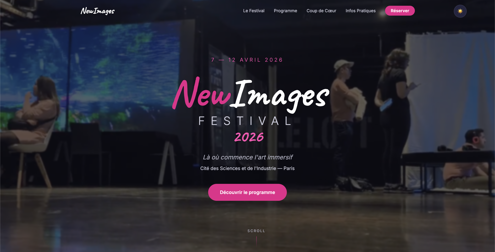

Rapport de communication, IMAC 2026
NewImages Festival
Présentation de nos supports de communication pour la 9e édition du NewImages Festival, réalisée dans le cadre de la Semaine de l'industrie, lors d'une visite à la Cité des sciences et de l'industrie, Paris.
Contexte & positionnement
Le NewImages Festival
Festival international de création immersive fondé en 2018 par le Forum des images. Chaque édition réunit artistes XR, professionnels du secteur et grand public autour de la réalité virtuelle, augmentée et mixte, des films dôme et des mondes virtuels interactifs.
Pour sa 9e édition (2026), le festival déménage au cœur de la Cité des sciences et de l'industrie, intégré à l'événement pluriannuel Immersions. L'entrée est gratuite pour le grand public ; un volet professionnel Industry Days (7–10 avril) complète la programmation.
Plus de 35 œuvres internationales issues de quatre compétitions (XR, Dôme, Mondes virtuels, Panorama) sont présentées dans plusieurs espaces de la Cité : Carrefour numérique, planétarium, auditorium et hall principal.
Contexte de réalisation
Ce travail a été produit dans le cadre de la Semaine de l'industrie, visite organisée à la Cité des sciences et de l'industrie. Le NewImages Festival, co-accueilli par la Cité, a constitué notre terrain d'observation et de communication.
Choix du format : La consigne ne prescrivait pas de stratégie de communication, exercice qui nécessiterait une étude de marché, des benchmarks et des KPIs. Nous avons choisi de produire trois supports de communication complémentaires (Instagram, LinkedIn, site web), chacun visant un moment différent du parcours audience. Ce rapport présente et justifie ces supports sans prétendre à une stratégie globale formalisée.
Collaboration inter-promotions : Le projet a été coordonné entre étudiants de plusieurs promotions IMAC, répartition des rôles en amont, collecte d'informations sur place lors de la visite, et production des supports en mode collaboratif.
Cibles de communication
18–35 ans connectés Amateurs d'art numérique Passionnés de VR / tech Étudiants créatifs Professionnels XR Industry Days Grand public parisienObjectif de communication
Transformer la curiosité numérique en présence physique au festival. Les trois supports jouent des rôles complémentaires : attirer (Instagram), qualifier (LinkedIn), convertir (site web).
Instagram, Carrousel

Slide 1, Présentation

Slide 2, Activités

Slide 3, Accroche

Slide 4, Infos

Slide 5, Call to action
Rôle du support
Le carrousel Instagram est le premier point de contact visuel avec le public jeune. Son format multi-slides oblige à l'action (swiper) et permet de délivrer l'information de façon progressive, comme un mini-parcours narratif.
Chaque slide répond à une question : Qui ? Quoi ? Où ? Quand ? Comment ?, structurant la mémorisation sans surcharger la première image.
Public cible
18–35 ans, utilisateurs Instagram actifs, sensibles aux expériences immersives, à la culture numérique et à l'art contemporain. Communauté parisienne et early adopters de la VR, followers de comptes comme @CiteSciences.
Intention éditoriale
- Susciter l'envie avant l'information
- Storytelling progressif slide à slide
- Avant-goût de l'expérience immersive
- CTA en dernière slide (lien en bio)
Choix créatifs
- Format 1080×1440 (natif Instagram)
- Dégradés chauds, orange, violet, bleu
- Vignettes style "autocollants / polaroïds"
- Typo manuscrite (titres) + sans-serif bold
Apport stratégique
- Fort taux d'engagement (format carrousel)
- Logos partenaires crédibilisent le propos
- Visuels partageables en stories
- Conversion vers site web via bio
LinkedIn, Posts

Format 1, Découverte + lien

Format 2, Visuel + œuvre

Format 3, Texte court
Rôle du support
LinkedIn cible un public professionnel et cultivé, créatifs, étudiants en écoles d'art, acteurs du numérique, curieux de culture tech. Le ton est plus élaboré qu'Instagram : il mise sur l'évocation intellectuelle et la promesse d'expérience singulière.
Les trois formats sont choisis délibérément pour illustrer des contraintes de publication différentes, démontrant qu'une stratégie LinkedIn se décline selon les situations (budget visuel, portée organique, contraintes éditoriales).
Public cible
25–45 ans, professionnels du secteur créatif et numérique, étudiants en écoles d'art, design et ingénierie, curieux de culture et de technologie. Potentiels visiteurs des Industry Days et grand public qualifié en quête d'activités culturelles originales.
| Format | Contenu & intention | Cible prioritaire | Choix stratégique |
|---|---|---|---|
| Texte + lien | Introduction poétique au festival (« Plongez dans une œuvre… »), lien vers le site pour approfondir. Génère du trafic direct. | Grand public qualifié, professionnels curieux | Formule idéale, combine accroche émotionnelle et conversion mesurable |
| Photo + texte | Focus sur une installation précise, le chien robot Néo. Humanise le festival, provoque la curiosité via un objet concret inattendu. | Amateurs de tech, communauté IA/robotique | La photo capte le scroll stop ; l'œuvre est un point d'entrée pour un public non-initié à l'art immersif |
| Texte seul | Texte court, registre manifeste (« Le futur de l'image n'est pas à venir »). Pas de visuel, pas de lien, format contraint pour maximiser la portée organique. | Large audience LinkedIn | L'absence de lien et de visuel favorise la diffusion par l'algorithme LinkedIn ; format « thought leadership » |
Ton éditorial
- Registre évocateur, non promotionnel
- Interrogation rhétorique en accroche
- Vocabulaire tech accessible
- Ponctuation émotionnelle (ellipses, tirets)
Choix de format
- 3 formats = 3 contraintes illustrées
- Idéal : toujours image + lien
- Le texte seul démontre l'adaptabilité
- Cohérence visuelle avec Instagram
Apport stratégique
- Touche un réseau professionnel qualifié
- Complète Instagram en profondeur
- Crédibilise la dimension institutionnelle
- Trafic vers site web mesurable
Site web, Landing page
Rôle du support
La landing page est le support de conversion central de la stratégie. Là où les réseaux sociaux suscitent l'envie, le site transforme cette envie en décision de visite. C'est le seul support qui concentre l'intégralité de l'information, programme, œuvres phares, infos pratiques, réservation.
Format one-page scrollable développé en HTML/CSS/JS vanilla, sans dépendance à un framework. Responsive (desktop, tablette, mobile). Hébergé et accessible via le lien ci-dessous.
Public cible
18–40 ans, profil curieux et connecté déjà sensibilisé par les réseaux sociaux. Cherche à confirmer son intérêt, explorer le programme et passer à l'action (réserver, partager, explorer les œuvres). Inclut familles, touristes culturels, professionnels XR.
Note importante, Le festival ne nous ayant pas donné accès à un nom de domaine dédié, le site a été hébergé sur le domaine personnel de l'étudiant. C'est vers cette URL que pointent tous les liens et call-to-action présents sur les supports Instagram et LinkedIn.

Direction artistique
Fond sombre (#0f0f1a) évoquant l'immersion et les salles XR. Accent rose/magenta repris de la communication officielle du festival. Typographie Caveat (manuscrite) pour les titres, cohérence avec le carrousel Instagram. Inter pour le corps de texte.
Option dark/light toggle pour l'accessibilité. Animations au scroll pour rythmer la lecture sans complexité.
Structure narrative (AIDA)
Le parcours de scroll suit la méthode AIDA :
- 1.Hero, vidéo immersive + titre + dates (Attention)
- 2.Festival, chiffres clés, contexte (Intérêt)
- 3.Programme, sections + vidéos d'ambiance (Intérêt)
- 4.Coups de cœur, œuvres détaillées (Désir)
- 5.Infos + réservation, conversion finale (Action)
Intention éditoriale
- Le scroll = exploration virtuelle
- Preuves sociales : vidéos réelles du festival
- Crédibilité via logos partenaires
- Entrée gratuite mise en avant
Choix techniques
- Vidéo hero en autoplay muté
- Lazy loading des vidéos hors-écran
- Responsive (mobile-first)
- HTML/CSS/JS vanilla, pas de dépendance
Apport stratégique
- Seul support qui centralise tout
- Partageable via un simple lien
- Référencement SEO possible
- QR code imprimable sur supports physiques
Stratégie d'ensemble
Les trois supports forment un entonnoir de communication cohérent. Chacun joue un rôle distinct mais complémentaire, calibré sur un moment précis du parcours de l'audience, de la découverte à la conversion en visiteur physique.
Attirer
Le carrousel capte l'attention sur un flux saturé. Design fort, storytelling visuel progressif, cible jeune et connectée. Génère intérêt et trafic vers le site.
Qualifier
Les posts LinkedIn approfondissent l'intention. Ton plus élaboré, trois formats pour trois contraintes. Touche un réseau professionnel et culturellement curieux.
Convertir
La landing page finalise la décision. Programme complet, infos pratiques, réservation en un clic. Transformation de la curiosité numérique en visite physique.
Cohérence de la stratégie
Le festival NewImages attire un public varié, amateurs d'art immersif, professionnels XR, grand public. La cohérence visuelle entre les trois supports (palette sombre, accent magenta, typographie commune) garantit une identité reconnaissable sur tous les canaux. Chaque support redirige vers le suivant : Instagram et LinkedIn pointent vers le site, le site convertit en réservation. La stratégie est simple, directe et sans redondance, adaptée à un événement gratuit dont l'enjeu n'est pas de vendre un billet mais de déclencher le déplacement.